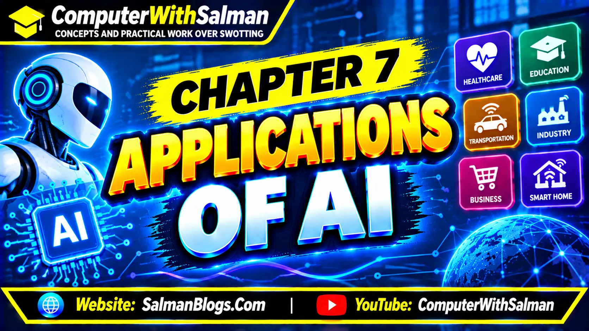

Complete Class 10 Computer Science Chapter 7 notes covering real-world applications of Artificial Intelligence (AI), benefits and challenges of AI applications, AI ethics, bias, fairness, transparency, privacy, data security, surveillance, and social equity. Includes simple examples, MCQs, short questions, long questions, and FAQs for FBISE and Punjab Board students.
Class 10 Computer Science Chapter 7: Applications of Artificial Intelligence (AI)
Posted in 10 Computer Science

These lecture notes are prepared by Salman Ahmad, who is both a teacher and a web developer.
The purpose of this material is to make the topic clear and useful for students of Class 10 Computer Science.
Artificial Intelligence (AI)
Artificial Intelligence (AI) is a technology that enables computers and machines to perform tasks that normally require human intelligence, such as understanding language, recognizing images, and solving problems.
Examples of AI [Mention any 1 or 2 Examples during writing exam]
Google Assistant: Understands voice commands and responds to users.
ChatGPT: Answers questions, explains topics, and helps users write content.
Self-Driving Cars: Use AI to recognize roads, traffic signs, and other vehicles.
YouTube: Recommends videos based on users' interests.
Face Recognition: Identifies people by analyzing their facial features.
Online Chatbots: Answer customers' questions on websites.
Medical Diagnosis: Helps doctors identify diseases by analyzing medical images and data.
Robots: Use AI to perform tasks such as sorting objects and working in factories.
Impact of AI on Jobs and Work
Automation: AI-powered machines and robots can perform tasks that were previously done by humans.
Faster Work: AI helps people complete tasks faster and reduce mistakes.
New Jobs: AI creates new job opportunities, such as AI developers and data scientists.
Changes in Work: AI changes how people perform their daily tasks.
New Skills: People need to learn new skills to work effectively with AI technology.
Job Losses: Some people may lose their jobs when AI replaces the tasks they perform.
Data and AI
Data is very important for AI because AI learns from data, just as students learn from books. AI uses accurate data to find patterns, make better decisions, and improve its results.
Example: YouTube uses data about the videos people watch to recommend similar videos they may like.
Automatic Data Collection
Automatic data collection is the process of collecting data using computers and devices without entering it manually. AI systems use this data to learn and improve their results.
Example: A fitness tracker automatically collects data about steps, heart rate, and daily activity.
Data Quality and Quantity
Data quality and data quantity are important for AI systems because they affect how well an AI system learns and produces results.
1. Data Quality
Data quality means how correct, complete, and reliable the data is. High-quality data helps AI produce better results.
Example: Correct student marks help AI predict student performance more accurately.
2. Data Quantity
Data quantity means the amount of data available for learning. A sufficient amount of data helps AI identify patterns more effectively.
Example: An AI system trained on thousands of animal pictures can learn to recognize different animals.
Real-World Applications of AI
1. Natural Language Processing (NLP)
Natural Language Processing (NLP) helps computers understand and respond to human language.
Example: Chatbots can answer questions, and translation apps can translate languages.
2. Robotics in Everyday Life
AI-powered robots help people perform different tasks automatically and efficiently.
Industrial Robots: Assemble products in factories.
Delivery Robots: Deliver food and packages.
Medical Robots: Assist doctors during surgeries.
Agricultural Robots: Help plant seeds and harvest crops.
3. Speech Technology and Voice Control
AI allows computers and smart devices to recognize, understand, and respond to human speech. It enables people to control devices and perform tasks using voice commands.
Example: Google Assistant can set alarms, play music, make calls, and answer questions using voice commands.
4. Recommendation Systems
AI suggests videos, products, and music based on users' interests, preferences, and past activities.
Examples:
YouTube recommends videos based on what people watch.
Netflix suggests movies and shows users may enjoy.
Online shopping websites recommend products based on previous searches and purchases.
5. Autonomous Vehicles (Self-Driving Vehicles)
AI enables vehicles to understand their surroundings, navigate roads, and make driving decisions with little or no human control.
Example: Self-driving cars use cameras, sensors, and AI to detect traffic signs, other vehicles, and pedestrians. They use this information to make driving decisions and travel toward their destinations.
Benefits of AI Applications
Saves Time: AI completes tasks quickly, allowing people to focus on more important work.
Improves Education: AI-powered learning apps help students learn according to their abilities and needs.
Supports Businesses: AI helps businesses plan activities, predict sales, and provide better customer service.
Reduces Human Errors: AI can perform tasks accurately when it is properly designed and trained.
Improves Different Fields: AI improves work in agriculture, banking, healthcare, and transportation.
Limitations and Challenges of AI Applications
Incorrect Results: AI may produce incorrect results if it uses low-quality or biased data.
Misunderstanding Questions: AI chatbots may misunderstand questions when the language is unclear.
Job Losses: AI may replace workers in some jobs, such as data entry and customer service.
Biased Decisions: AI may make unfair decisions if it is trained on biased data or designed poorly.
Need for Careful Testing: AI systems must be tested carefully because mistakes in fields like healthcare and law can cause serious problems.
Ethics, Impacts, and Social Impact of AI
Artificial Intelligence (AI) is changing how people live, work, and communicate. However, AI must be developed and used responsibly to protect people's rights, privacy, and safety.
1. Ethics in AI
Ethics in AI means using AI in a responsible, fair, and safe way. AI systems should respect human rights, protect personal information, and avoid harming people.
Example: An AI system should treat all students fairly when evaluating their performance.
2. Biases in AI and Algorithms
Bias in AI occurs when an AI system produces unfair results because of biased or unbalanced training data or a poorly designed algorithm.
Example: An AI hiring system may unfairly reject qualified candidates if it learns from biased hiring data.
3. Fairness in AI
Fairness in AI means treating people equally and avoiding unfair discrimination based on gender, age, background, or other personal characteristics.
Example: An AI hiring system should evaluate candidates according to their skills and qualifications.
4. Transparency in AI
Transparency in AI means making it clear how an AI system works and how it reaches its decisions. People should be able to understand why an AI system gives a particular result.
Example: A bank should explain why its AI system rejects a loan application.
5. Privacy
Privacy in AI means protecting people's personal information and using it only for appropriate purposes. AI systems should not collect or use personal data without proper permission.
Example: A learning app should protect students' names, marks, and personal details.
6. Data Security
Data security means protecting data from unauthorized access, theft, loss, or misuse. AI systems should use proper security measures to keep information safe.
Example: A hospital should protect patients' medical records from hackers.
7. Surveillance
Surveillance means monitoring people or their activities using cameras, sensors, or other technologies. AI can help improve security, but excessive monitoring may affect people's privacy.
Example: AI-powered cameras can identify suspicious activities in public places, but their use should respect people's privacy.
8. AI and Social Equity
AI and social equity means ensuring that the benefits of AI are available to people from different backgrounds and economic conditions. Everyone should have a fair opportunity to benefit from AI technology.
Example: Providing affordable AI learning tools to students in rural and urban areas can help reduce educational inequalities.
Responsibility of AI Designers
AI designers are responsible for making AI systems fair, safe, and helpful. They must ensure that their systems work correctly and do not treat people unfairly. Creating trustworthy AI is both a technical task and a moral responsibility.
Following Ethics in AI
AI ethics means following the principles of fairness, honesty, and responsibility when creating or using AI. Designers must protect privacy, prevent harm, and avoid discrimination. Ethical AI builds trust between people and technology.
Exercise: Short Questions and Answers
1. What is Artificial Intelligence (AI)?
Artificial Intelligence (AI) is a technology that enables computers and machines to perform tasks that normally require human intelligence, such as learning, problem-solving, and decision-making.
2. How is AI used in daily life?
AI is used in daily life through voice assistants, recommendation systems, smart cameras, online shopping, and self-driving vehicles. It helps people complete tasks more quickly and easily.
3. Why does AI need large and good-quality data?
AI needs sufficient and good-quality data to learn patterns, make better decisions, and produce accurate results. Poor-quality data may lead to incorrect or biased results.
4. What is the role of Natural Language Processing (NLP)?
Natural Language Processing (NLP) helps computers understand, interpret, and respond to human language.
Example: Chatbots use NLP to understand questions and provide answers.
5. Give one example of robotics in everyday life.
A robot vacuum cleaner is an example of robotics in everyday life. It uses sensors and automated functions to clean floors with little human effort.
6. What is the purpose of speech recognition technology?
Speech recognition technology enables computers and devices to recognize spoken words and convert them into text or commands.
Example: People can use voice commands to set alarms or search for information.
7. How do recommendation systems work?
Recommendation systems analyze users' interests, preferences, and previous activities to suggest relevant content.
Example: YouTube recommends videos based on the videos a user watches.
8. What is meant by bias in AI systems?
Bias in AI occurs when an AI system produces unfair results because of biased training data or a poorly designed algorithm. It may cause the system to treat some people unfairly.
9. Why should AI systems be transparent and fair?
AI systems should be transparent so people can understand how they make decisions. They should also be fair to ensure that people are treated equally without discrimination based on personal characteristics or background.
1. What is Artificial Intelligence (AI)?
a. A technology that enables machines to perform tasks requiring human intelligence
b. A method of repairing computer hardware
c. A type of computer storage
d. A programming language
Answer: a. A technology that enables machines to perform tasks requiring human intelligence
2. What does AI stand for?
a. Automated Internet
b. Artificial Intelligence
c. Advanced Information
d. Automatic Integration
Answer: b. Artificial Intelligence
3. What does ML stand for?
a. Machine Learning
b. Manual Logic
c. Modern Language
d. Memory Location
Answer: a. Machine Learning
4. What is Machine Learning (ML)?
a. A method of manually entering all instructions for every situation
b. A branch of AI that allows computers to learn from data
c. A technique for manufacturing computer parts
d. A method of connecting printers
Answer: b. A branch of AI that allows computers to learn from data
5. What is the relationship between AI and ML?
a. AI is a branch of ML
b. Both are exactly the same
c. ML is a branch of AI
d. Neither is related to computers
Answer: c. ML is a branch of AI
6. Which of the following is an example of AI?
a. A basic wooden table
b. A voice assistant that understands spoken commands
c. A simple notebook
d. A manual pencil sharpener
Answer: b. A voice assistant that understands spoken commands
7. Which of the following is a smart voice assistant?
a. Microsoft Paint
b. Notepad
c. Siri
d. WordPad
Answer: c. Siri
8. What is a common use of AI in recommendation systems?
a. Suggesting content based on user interests
b. Increasing the size of a monitor
c. Replacing computer keyboards
d. Repairing damaged hardware
Answer: a. Suggesting content based on user interests
9. Which platform uses recommendations to suggest videos?
a. Notepad
b. Paint
c. WordPad
d. YouTube
Answer: d. YouTube
10. What is the purpose of a chatbot?
a. To repair damaged hardware
b. To answer questions and assist users
c. To increase screen brightness only
d. To store electricity
Answer: b. To answer questions and assist users
11. What is bias in AI?
a. When an AI system produces unfair results
b. When a computer starts normally
c. When data is stored correctly
d. When a printer prints a document
Answer: a. When an AI system produces unfair results
12. What can cause bias in an AI system?
a. Using suitable and diverse training data
b. Using incomplete or unbalanced training data
c. Turning off a monitor
d. Increasing keyboard speed
Answer: b. Using incomplete or unbalanced training data
13. Why is data privacy important in AI?
a. It protects personal information from misuse
b. It makes computers heavier
c. It increases the size of files
d. It removes the need for software
Answer: a. It protects personal information from misuse
14. Who is responsible for designing, testing, and fixing AI systems?
a. Printers
b. Speakers
c. Developers
d. Monitors
Answer: c. Developers
15. What is supervised learning?
a. Learning from unlabeled data only
b. Learning without using data
c. Learning only from computer hardware
d. Learning from labeled data
Answer: d. Learning from labeled data
16. What is labeled data?
a. Data that cannot be stored
b. Data with known answers or categories
c. Data used only for printing
d. Data without any information
Answer: b. Data with known answers or categories
17. What is unsupervised learning?
a. Learning from unlabeled data to discover patterns
b. Learning from labeled data only
c. Learning without examining data
d. Learning by following fixed answers for every example
Answer: a. Learning from unlabeled data to discover patterns
18. Which learning method uses labeled data?
a. Unsupervised learning
b. Manual data entry
c. Supervised learning
d. Random grouping only
Answer: c. Supervised learning
19. Which learning method discovers patterns in unlabeled data?
a. Supervised learning
b. Manual programming only
c. Data printing
d. Unsupervised learning
Answer: d. Unsupervised learning
20. Which of the following is a supervised learning algorithm?
a. Linear Regression
b. K-Means Clustering
c. Manual file copying
d. Random data sorting without labels
Answer: a. Linear Regression
21. What is the main purpose of Linear Regression?
a. To create computer hardware
b. To predict numerical values
c. To delete data automatically
d. To design web pages only
Answer: b. To predict numerical values
22. Which example is suitable for Linear Regression?
a. Grouping customers without predefined categories
b. Turning a computer on
c. Predicting exam scores from study hours
d. Formatting a document
Answer: c. Predicting exam scores from study hours
23. What is a Decision Tree?
a. A physical tree connected to a computer
b. A type of computer cable
c. A tool used only for drawing pictures
d. An algorithm that makes predictions using questions and conditions
Answer: d. An algorithm that makes predictions using questions and conditions
24. Which structure does a Decision Tree use?
a. Tree-like structure
b. Keyboard layout
c. Network cable structure
d. Circular storage structure only
Answer: a. Tree-like structure
25. Which of the following is an unsupervised learning algorithm?
a. Linear Regression
b. Decision Trees
c. K-Means Clustering
d. Logistic Regression
Answer: c. K-Means Clustering
26. What is the main purpose of K-Means Clustering?
a. To predict numerical values using a straight line
b. To group similar data points into clusters
c. To repair computer hardware
d. To create passwords automatically
Answer: b. To group similar data points into clusters
27. Which is an example of K-Means Clustering?
a. Predicting exam scores from study hours
b. Calculating a percentage manually
c. Printing a report
d. Grouping customers according to shopping habits
Answer: d. Grouping customers according to shopping habits
28. What is model performance evaluation?
a. Checking how accurately a model makes predictions
b. Checking the physical size of a computer
c. Measuring the length of a keyboard
d. Installing an operating system
Answer: a. Checking how accurately a model makes predictions
29. What is a confusion matrix?
a. A device used to store files
b. A programming language
c. A table that compares predicted results with actual results
d. A tool used to connect computers
Answer: c. A table that compares predicted results with actual results
30. What is the purpose of a confusion matrix?
a. To increase computer memory
b. To check model performance and identify correct and incorrect predictions
c. To create database tables only
d. To improve internet speed directly
Answer: b. To check model performance and identify correct and incorrect predictions
31. What does TP stand for in a confusion matrix?
a. Total Prediction
b. Tested Program
c. Training Process
d. True Positive
Answer: d. True Positive
32. What does TN stand for in a confusion matrix?
a. True Negative
b. Total Number
c. Training Network
d. Tested Number
Answer: a. True Negative
33. What does FP stand for in a confusion matrix?
a. Final Prediction
b. False Positive
c. First Program
d. Fixed Process
Answer: b. False Positive
34. What does FN stand for in a confusion matrix?
a. Final Number
b. Fixed Network
c. False Negative
d. First Name
Answer: c. False Negative
35. When does a True Positive (TP) occur?
a. The model predicts positive, and the actual result is positive
b. The model predicts negative, and the actual result is positive
c. The model predicts positive, and the actual result is negative
d. The model predicts negative, and the actual result is negative
Answer: a. The model predicts positive, and the actual result is positive
36. When does a False Positive (FP) occur?
a. The model predicts positive, and the actual result is positive
b. The model predicts negative, and the actual result is negative
c. The model predicts negative, and the actual result is positive
d. The model predicts positive, but the actual result is negative
Answer: d. The model predicts positive, but the actual result is negative
37. What does accuracy measure in machine learning?
a. The number of computers in a lab
b. The percentage of all predictions that are correct
c. The amount of data stored on a disk
d. The speed of a keyboard
Answer: b. The percentage of all predictions that are correct
39. A model makes 85 correct predictions out of 100. What is its accuracy?
a. 85%
b. 65%
c. 75%
d. 95%
Answer: a. 85%
40. In a confusion matrix, what does a False Negative (FN) mean?
a. The model predicts positive, and the actual result is positive
b. The model predicts negative, and the actual result is negative
c. The model predicts positive, and the actual result is negative
d. The model predicts negative, but the actual result is positive
Answer: d. The model predicts negative, but the actual result is positive
Test Yourself: Interactive MCQs (AI and Machine Learning)
Class 10 Computer Science Chapter 6 MCQs: Introduction to AI and Machine Learning
1. What is Artificial Intelligence (AI)?
2. What is Machine Learning (ML)?
3. Which of the following is an example of AI?
4. Which of the following is a smart assistant?
5. What is a common use of smart assistants?
6. Which technology helps YouTube recommend videos?
7. What is the purpose of a recommendation system?
8. Which platform uses recommendation systems?
9. What is a chatbot?
10. What is image recognition?
11. What does AI bias mean?
12. What can cause bias in an AI system?
13. What does data privacy mean?
14. Which practice helps protect personal data?
15. Who should help ensure an AI system is designed responsibly?
16. What is Machine Learning mainly used for?
17. What is supervised learning?
18. What is unsupervised learning?
19. What is labeled data?
20. Which type of learning uses unlabeled data?
21. Which is an example of supervised learning?
22. Which is an example of unsupervised learning?
23. What is a machine learning algorithm?
24. What does Linear Regression predict?
25. Which is an example of Linear Regression?
26. What is a Decision Tree?
27. Which problem can a Decision Tree help solve?
28. What is clustering?
29. K-Means is an example of which type of algorithm?
30. What is the purpose of K-Means Clustering?
31. What is model performance evaluation?
32. What is a confusion matrix?
33. What does True Positive (TP) mean?
34. What does True Negative (TN) mean?
35. What does False Positive (FP) mean?
36. What does False Negative (FN) mean?
37. Which formula is used to calculate accuracy?
38. A model makes 85 correct predictions out of 100. What is its accuracy?
39. If TP = 40, TN = 45, FP = 10, and FN = 5, how many predictions are correct?
40. Using TP = 40, TN = 45, FP = 10, and FN = 5, what is the model's accuracy?
FAQs
Class 10 Computer Science Chapter 6: AI and Machine Learning FAQs
Artificial Intelligence (AI) is a technology that enables computers and machines to perform tasks that normally require human intelligence, such as understanding language, recognizing images, and solving problems.
Machine Learning (ML) is a branch of AI that allows computers to learn from data, identify patterns, and make predictions or decisions.
AI enables machines to perform tasks that require human intelligence, while ML is a branch of AI that helps machines learn from data and improve their predictions.
Common applications of AI include smart assistants, chatbots, image recognition, recommendation systems, and voice recognition.
Smart assistants are AI-powered tools that understand voice commands and help users perform tasks. Examples include Siri, Google Assistant, and Alexa.
A recommendation system suggests videos, products, music, or other content based on users' interests and activities. Examples include YouTube, Netflix, and Daraz.
AI bias occurs when an AI system produces unfair results for certain people or groups, often because of incomplete or unbalanced training data.
Data privacy is important because AI systems may use personal information. Protecting this information helps prevent unauthorized access and misuse.
Supervised learning is a type of machine learning that uses labeled data, where the correct answers are already known. For example, predicting student marks using study hours and previous scores.
Unsupervised learning is a type of machine learning that identifies patterns and groups similar data without predefined labels. For example, grouping customers by their shopping habits.
Linear Regression is a machine learning algorithm used to predict numerical values based on the relationship between variables. For example, predicting student marks from study hours.
A Decision Tree is a machine learning model that makes predictions by following a tree-like structure of questions and conditions. For example, it can predict whether a student will pass or fail.
K-Means Clustering is an unsupervised learning algorithm that divides data into groups based on similarities between data points.
A confusion matrix is a table that compares actual results with predicted results. It helps evaluate a machine learning model by showing correct and incorrect predictions using TP, TN, FP, and FN.
Model accuracy measures the percentage of predictions a model gets correct. It is calculated using the formula: Accuracy = (TP + TN) / (TP + TN + FP + FN) × 100, where TP is True Positive, TN is True Negative, FP is False Positive, and FN is False Negative.